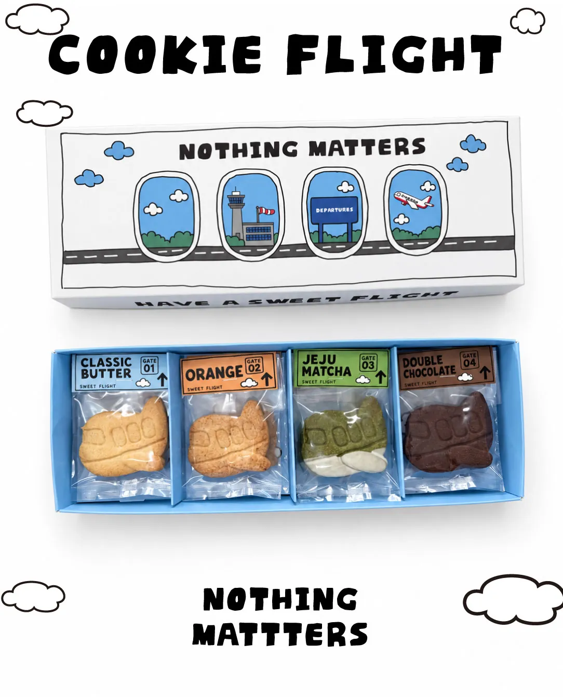
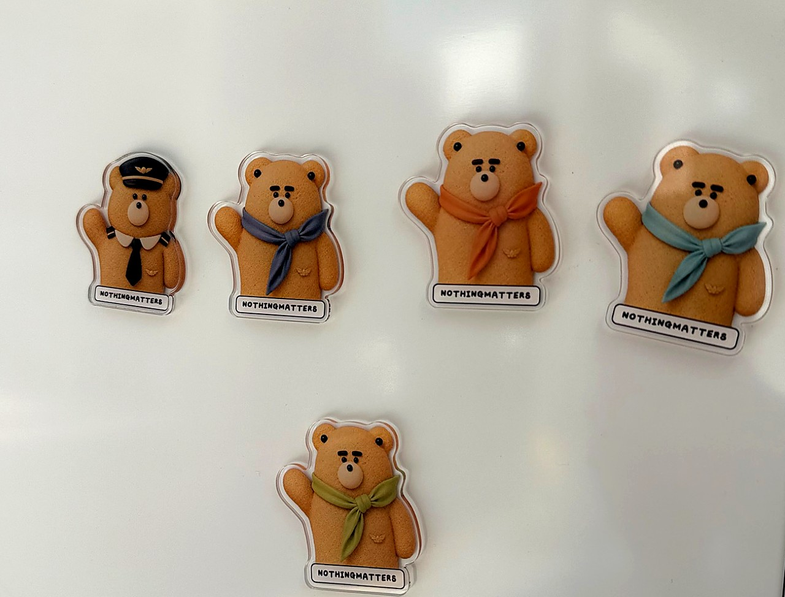

제주·부산으로 떠나기 전
여행지에서 만날 가족이나 친구에게 작게 챙겨갈 선물이 필요할 때. 쿠키처럼 부피가 크지 않은 디저트는 여행 전에 준비하기 좋습니다.
GIMPO AIRPORT · COOKIE & GIFT
김포공항 근처에서 선물이나 디저트를 찾고 계신가요?
비행기 모양의 COOKIE FLIGHT부터 여행 가는 날 챙기기 좋은 쿠키와 작은 기념품까지.
낫띵메터스는 김포공항·송정역 인근 공항동에서 예약 제작하고 있습니다.

FIND YOUR GIFT
여행 전에 챙길 작은 선물인지, 김포공항을 기억할 기념품인지, 가볍게 나눠 먹을 디저트인지에 따라 골라보세요.
01 · COOKIE FLIGHT
김포공항에서 가져갈 조금 특별한 쿠키를 만들고 싶었습니다. 그래서 낫띵메터스의 비행기는 하늘을 나는 대신 쿠키 박스 안에 들어갑니다.
여행을 떠나는 사람에게도, 누군가를 만나러 가는 사람에게도, 공항에서 일하는 사람에게도. 김포공항이라는 장소와 자연스럽게 연결되는 낫띵메터스의 대표 쿠키입니다.
COOKIE FLIGHT 자세히 보기 ↗
GIFT MOMENTS
여행지에서 만날 가족이나 친구에게 작게 챙겨갈 선물이 필요할 때. 쿠키처럼 부피가 크지 않은 디저트는 여행 전에 준비하기 좋습니다.
마중을 나가거나 오랜만에 만나는 사람에게 빈손으로 가기는 조금 아쉬운 날. 부담 없이 건넬 수 있는 작은 쿠키 선물을 준비해보세요.
비행기와 CREW를 모티브로 만든 제품은 항공이라는 공통된 이야기가 있어 조금 더 재미있는 선물이 됩니다.
기념품이라고 꼭 오래 보관하는 물건일 필요는 없습니다. 먹고 없어지는 쿠키도 그날의 여행을 기억하게 만드는 작은 기념품이 될 수 있습니다.
GIMPO DESSERT COLLECTION
공항과 여행의 이야기를 담은 네 가지 제품을 소개합니다. 마음에 드는 쿠키의 상세페이지에서 구성과 주문 방법을 확인하세요.
A LITTLE SOUVENIR
김포공항에서 기념품을 찾는다고 해서 꼭 열쇠고리나 자석만 떠올릴 필요는 없습니다. 누군가와 나눠 먹었던 쿠키, 비행기 모양이 재미있어서 찍어둔 사진, 공항 가는 길에 챙겨간 작은 박스도 여행의 기억이 될 수 있으니까요.
낫띵메터스는 김포공항이라는 장소를 쿠키와 작은 캐릭터로 풀어가고 있습니다. COOKIE CREW 쿠키와 실제 마그넷 컬렉션도 살펴보세요.
COOKIE CREW 쿠키·마그넷 보기 ↗
HOW TO PICK UP
원하는 쿠키와 필요한 날짜를 확인합니다.
확정한 시간에 공항동 작업실에서 픽업합니다.
쿠키를 챙겨 김포공항으로 출발합니다.
VISIT & PICKUP
낫띵메터스
서울특별시 강서구 송정로 25 1층예약 제작 · 예약 픽업
TODAY AT GIMPO
김포공항 실시간 출발 항공편 중 일부를 미리 봅니다. 김포공항 도착정보·도착시간과 출발정보는 전체 항공편 보드에서 확인할 수 있습니다.
스크롤하면 오늘의 항공편을 확인합니다.
김포공항 실시간 출도착 전체 보기 →FROM THE JOURNAL
GOOD TO KNOW
아니요. 낫띵메터스는 김포공항 내부 매장이 아니라 김포공항·송정역 인근 공항동에 있는 예약 제작 쿠키 작업실입니다. 주문을 확정한 뒤 작업실에서 픽업해주세요.
예약 제작을 기준으로 운영합니다.
주문이 확정된 경우 약속한 날짜와 시간에 공항동 작업실에서 픽업할 수 있습니다.
COOKIE FLIGHT, TERMINAL SAND COOKIE, AIRPLANE BUTTER COOKIE, COOKIE CREW를 소개합니다. 각 제품 상세페이지에서 구성과 주문 방법을 확인해주세요.
항공 테마와 연결되는 COOKIE CREW 및 비행기 모양 COOKIE FLIGHT 등의 제품을 확인할 수 있습니다.
HAVE A SWEET FLIGHT.
김포공항 가는 날 조금 특별한 선물이 필요하다면 낫띵메터스에서 미리 준비해보세요.